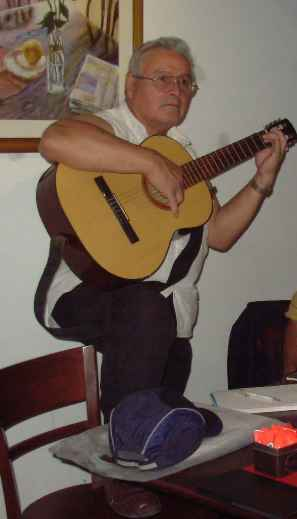

CANTÁNDOLE AL TIEMPO
CANTÁNDOLE AL TIEMPO
| Autor: Emilio Pablo (Catamarca, Argentina) |
|---|
 |
¡Nuevo! Ahí está tras la tormenta, Disipa pues esa pena,
|
El mendigar por un beso es la más dulce tarea, puesto que si te mareas te robo como quinientos.
No ha de ser atrevimiento, si aprovecho de oportuno; pero es tan largo mi ayuno que han de comerte mis besos...
!No¡ Pues no les pongas precios que antes los quiero probar; por ahí para navidad, capaz que quiero unos cientos...
Dulces los quiero, y bien tiernos, que valga oro cada uno... tras del primero el segundo así, como van saliendo....
27/03/11
|
Si tengo que amar a alguien, El tema es, que la vida, Tú, sabrás dónde va el moño Si el compartir la sonrisa, Si la respuesta en el beso Andar y andar los momentos
|
A ti, amiga/o que eres
esas respuesta esperada; gracias te doy desde el alma, y lo digo de corazón; eres gratificación que a mi poesía le paga... En el envío se manda como un reclamo al amigo, por ese ausente abrigo que tiene la soledad; que te dignes contestar y sí... me llega hasta el alma. Algo tiene tu palabra, como una palmada tierna, que cada vez que me llega alivia mi mundo gris; tener amigos así verdad que es cosa muy grata. A la vez que doy mis gracias, también mis deseos doy; pues que este día de hoy te sea de los mejores; que multipliques tus flores en el jardín del amor. 09/04/11 Un gran abrazo. EMILIO PABLO
|
Estrenamos aquel nos en el que nos contuvimos; en esos tiempos tan lindos de aquella palabra:!Amor¡; sentimiento que hizo, Dios, para que fuésemos templo.
Aún recuerdo momentos de pura euforia en ambos; esa que ponía en las manos gratas tibiezas de sol; amigos... era el amor; grato sentimiento humano.
Por esa miel en sus labios yo, iba la noche despierto; escuchando sobre el viento que ella, me estaba nombrando; y bueno... yo, iba en reclamo de aquel su balcón abierto.
Solía llenar el silencio con versos inesperados; como algo que iba brotando desde mi alma encendida; nombrarla era poesía que desgranaban mis labios...
Fue cosa de … algunos años, yo, ya he perdido la cuenta; tenía ella, ¿ya sus cuarenta? y yo?... ya setenta y tantos; chiquilines desbocados, entregados a una fiesta.
Y sí que fue cosa buena... una invasión de ternura; disfrutar de su dulzura me hizo el poeta mejor; aquellos versos de amor nacieron por su hermosura. 16/04/11 EMILIO PABLO
|
Nervios, corridas y susto; que por que sí o por que no; sin dar descanso al reloj mirándolo de soslayo; pues los micros van entrando... pero el de ella, no llega; y el todo me hormiguea con la loca desazón; mientras que mi corazón como un loco zapatea.
Allá, el cartel parpadea cambiando con las llegadas; pero la de mi amada, parece que se olvidó; tentado me siento yo de entrar ha hacer despelote; pero hay guardias grandotes y vuelvo ha considerar; me digo: !Ya ha de llegar¡ pero tragando salobre.
Con eso que me carcome y le hace “agujeros” al alma; me pienso con mi guitarra envuelto en su canto fiel; mientras me trago esa hiel que vierte la espera larga, viendo que la hora avanza y yo, aún sin comer; esta espera es algo cruel que no me lo imaginaba.
Me están doliendo las tabas de ese pasear sin descanso; que no puedo estar sentado con toda esa desazón; hay algo en mi interior que se revela y me grita: !Pedazo de papa frita.¡.. ¿Pusiste en hora el reloj? Debo reconocer que no... !Adelantao lo tenía¡... 18/04/11 EMILIO PABLO
|
Pasa que yo, te amo... de la forma más hermosa... de la única forma que sabe el corazón; y estás en el rincón más profundo de sus formas... Pasa que yo, te amo cual me amo a mí mismo; si eres pulso y latido que galopa hecho pasión; desde allí, de ese rincón que me dice que estoy vivo... Pasa que te quiero enloquecido desde haberte conocido dulce amor.... Pasa que adorarte es mi delirio pues disfruto mi cariño que dispuesto fue, por Dios.
14/02/11 |
Porque tú, me quieres llevo almibaradas las cuerdas del alma que en preludios cantan; porque tú, me quieres, me enciendo en mieles en cada palabra....
Porque fue destino que yo, te encontrara, y que me ilumines como una alborada; sé que hubo sombras que ayer me acechaban....
Porque sé el sendero de la simple andanza, al pisarlo juntos da floridas ramas; y estalla en gorjeos desde sus calandrias...
que agitó mi sangre a cantar mil cosas que antes callaba; ay!, tu amor, mi reina, de mi amor es savia.
11/12/10
|
|---|---|
Allí, estás en lo tibio de este cuarto; |
Cómo quisiera, en tu voz, |
Estás para llenar mi alma Tienes esa dulce gracia Yo, siento que algo me falta Sin ti, cuánto faltaría
25/03/2010 !¿Y qué más puedo decir |
|---|
Sos mi amiga y me complace |
Pasa que me vas por dentro igual que una sudestada; sin que pueda salvar nada de aquello que iba en mí. Hiciste de ese hombre gris, esto que hoy es carcajadas...
Te colaste a mis mañanas atrevida y prepotente; para que aquí, en mi mente, tu sonrisa se explayara; de aquello que me aquejaba, pues bien, sané de repente...
Solcito que por caliente sobre mis campos florea; para reverdecer las hierbas que mi invierno agostó; hoy pienso que somos dos, y es más hermosa la senda...
Si es noche, mirando estrellas; si es día, mirando el sol; lo cierto es que el corazón con tu imagen se alimenta; pensar que yo, ni en cuenta tenía lo que era el amor.
Oír mi nombre en tu voz es sentirme melodía; y si te digo, querida, soy miel ansiosa de vos; gracias por tu dulce amor, que así me volvió a la vida.-
|
|---|---|
ANTES QUE DESPIERTES Ahí, en el límite justo, |
|
Sobre el romance la pena Que deja el silencio impuesto, Cual si de los sentimientos Ni un poco importara ya; ¡Y esa amarga soledad Que duele hasta en los huesos¡... ¿Vale la pena soñar? ¿Entregarse a una esperanza? Si la experiencia amarga Siempre se ha de repetir; El solitario vivir Es quizá más simple carga... Suma de palabras gratas Vacías de contenido; Dejan en quién ha creído, La bofetada final; ¡Cuánto duele despertar¡ Allí, quebrado hasta el alma... Se sucederán mañanas Y posibles primaveras; Pero allí, siempre la pena En su continuo brotar; Lo que no ha sido será Por siempre esa huella amarga.- |
Feliz día del amor; eso tan dulce y bonito; que aún, cuando sea poquito nos alumbra más que el sol; eso que da al corazón, para vivir, los motivos...
Un feliz "San Valentín", a ti, hoy desearte quiero, en mil sustanciosos besos que endulcen tu existir; y a la vez, quiero que a mí, me vuelva, aunque sea en reflejos...
Porque el amor es lo bueno que le sucede a la vida; y aún cuando deje heridas son pagas por el dulzor; si él está en tu corazón, algo hermoso te anida. |
Guarda silencio mi voz |
Bésame antes de irte; me dijo, y aprovechado, yo le bajé medio labio con aquel beso vehemente; la besé como un demente y aún se estará acordando. Y sí... pasaron los años y voy en remordimientos, pues que al obrar como hambriento su boca le hice pedazos; eran bien dulces sus labios, y ella, me dijo: "provecho".
Ya no la he vuelto ha besar puesto que ella, me arisquea; quizá a lo mejor crea que será otro beso igual; en fin... estamos en paz... no olvida la vez aquella. |
|---|---|
|
|
|
Cuando simplemente bastaría nombrarte, Hay algo que hace que escriba de ti; Que diga las cosas que tú, me provocas Pensando en tu boca de dulce reír..
Cuando bastaría callar lo que siento; De mis pensamientos, nace el más feliz; Aquél que te quiere envolver en besos; Aquél que a mis sombras le saca lo gris.
No sé los tormentos que llevo sufriendo, Desde aquél momento en el cual te vi; Cuando hay imposibles es sufrir el alma; Más, a la esperanza no la hace morir.
Cruzaré las noches; gastaré mi tiempo; Morderé mis sueños para no sufrir; Y dejaré en el viento que besa tus formas; De mi amor, aromas que lleguen a ti.
Cuando bastaría darme por vencido, Dando por perdido todo eso feliz; Me levanto loco, con mi alma en alto, Para que a tu paso sea alfombra por ti.-
|
Y mientras tú, te decides, La vida se va pasando; Dime, amor, hasta cuando Puede durar mi sentir; Brasas que dejas morir Ya no podrán calentarnos.
Cuando aun ruegan mis labios, Resecos sin esperanzas; Tú, sigues tirando el agua Que es el caudal del amor; Cuando la flor se murió No intentes recuperarla...
Indolente y con tu alma Puesta en cualquier fantasía; Dejas que pasen los días Vacíos de utilidad; Y la vida es nada más, Que una ráfaga furtiva...
Ya se agrió tu sonrisa; Tu piel marchitó el otoño; Y hasta el brillo de tus ojos Denota tu soledad; Si hasta mi vida se va... Como una hoja en el arroyo...
No es reproche, tan sólo Es mi lamento sentido, puesto que haberte querido jamás lo pude evitar; con gotas de amarga sal sangró mi amor malherido.- |
| TIENES FRÍO, AMOR Tienes frío, dulce amor, ven a mis brazos¡ Yo, iré a ti envuelto en llamaradas... Desde mi corazón llevaré ascuas en estas poesías desbocadas que quieren para ti, ser el reparo... No temas, viene el sol que dan los labios, que a punto de encontrarnos nos inundan, con esa dulce sinrazón de enamorados; que en plena oscuridad buscan auroras que quieran refugiarnos... Acúnate en mí, mi ser te entrego; cual un níveo colchón de ilusiones; la noche pasará si estás conmigo y de abrigo me llenan tus amores... |
EN TU HOMENAJE, MADRE
Desgranar quiero de a uno Mis versos en tu homenaje, Porque hoy rememoran, madre, Tu día que es cosa justa; Puesto que a todos nos gusta Tener la aromada flor, De ése, tu hermoso amor Que es esencial como el aire... ¿De dónde vendrían las aves?; ¿De dónde otras bellezas, Si es que la naturaleza No hiciese tu corazón?... Lo hizo y le puso amor Por el mandato divino, Para darnos tu cariño Y tu santa protección... Madre, ese verbo,! Amor¡ Tiene raíz en tu todo, Pero tú, lo haces de un modo Que nadie ha de igualar; Tu entrega es de verdad; Tu sacrificio, gustoso; Y aun viviendo con poco Siempre tu tesoro es dar. Por eso es este cantar, Humilde flor que te entrego; De mi ser lo puro y bello Por no tener nada más; Bendita seas mamá, Flor de luz sobre la tierra; Desde ti, todo se llena, De dulce felicidad.- EMILIO PABLO Domingo, 02 de Mayo de 2010
|
|---|
Reservados todos los derechos de autor.
Nací en el barrio Del Molino,en Belén, Catamarca... Niño aún,8 ó 9 años, ya recorría parajes de mi pueblo(montañas, río, quebradas). De todo aquello hay recuerdos que vuelven en mi poesía... Al amor, puedo decir que llegué después, enamorado de mi maestra de 3r.grado. Esto se me hizo oficio y aun hoy sigo valorando a la mujer, como al regalo más hermoso de la vida...72 años no bastan para olvidar aquello... Lo de ese ayer mezclado al presente va en mis versos, por suerte, y al contrario, en mi necesidad de volver a todo aquello, me alimento... |
|---|